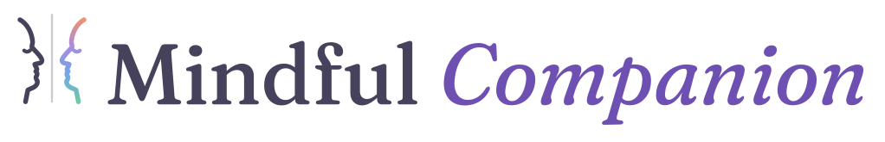
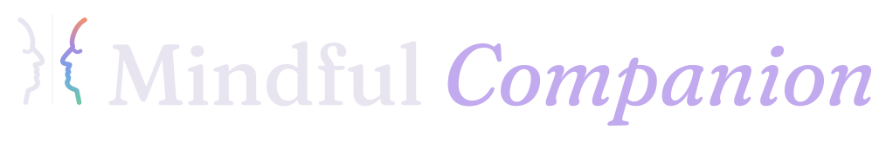
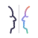

Brand sheet · v2 · September 2026 · full guide
01 — Logo
A face in profile, eyes closed, drawn as one line in ink. Across a hairline, its reflection returns in the four brand colours: peach, lavender, sky, mint. One person, deeply heard and held. Not a conversation.
Horizontal lockup on paper — the default everywhere.

Night: the line lifts to night ink; the reflection keeps its colour.
Stacked — square placements, splash screens.
Mark alone — app icon, avatar, inline UI. Below 32 px use the favicon cut (no eye, heavier line).
Mono — inherits currentColor. Use on photos, embossing, one-colour print.

48Minimum sizes. 16 and 24 use the favicon cut; 32 and up use the master. Below 16 px, nothing.
Clear space on every side equals a quarter of the mark's height. Nothing else enters the dashed box.
02 — Colour
Paper carries about 70% of any screen and ink 20%. The four families — dawn, lavender, sky, mint — are the reflection: they appear together in the mark and the wash, and one at a time as help-type tints. Every -deep tone clears AA on paper and on its own tint, in both themes.
Day
Night — same hues, inverted value
03 — Type
Fraunces speaks: headings, the AI reflection, the wordmark, quotes. Light weights, italics for warmth, never bold. Nunito Sans works: body copy, buttons, labels, forms.
You don't have to make sense of all of it today.
04 — Surfaces & controls
Anything you can press is a pill. Cards are 24 px radius on the card surface with the soft shadow; input wells are 16 px on mist. Hairlines are ink at 10–14% — never a border and a shadow on the same element.
Primary = dawn-strong with on-dawn text (AA in both themes). Help types keep their family tint with the family's -deep text (AA).
From your companion
05 — Voice
Second person, present tense, sentences that could be said softly across a table. No exclamation marks, no emojis, no medical claims. The safety line is always reachable and never loud.
Say
Save quietly— verbs stay gentle and specific.
Just listen·
I need someone to hear me— the user's words, not clinical labels.
From your companion— the AI is a companion, never a therapist, coach, or assistant.
When you're ready— permission, not prompts.
A space for reflection, not a substitute for professional care.
Don't